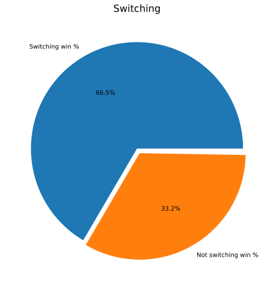
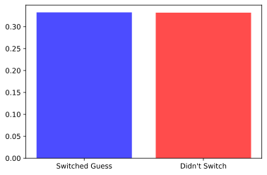

Table of contents.
The famous Monty Hall brain teaser:
Suppose you're on a game show, and you're given the choice of three doors: Behind one door is a car; behind the others, goats. You pick a door, say No. 1, and the host, who knows what's behind the doors, opens another door, say No. 3, which has a goat. He then says to you, "Do you want to pick door No. 2?" Is it to your advantage to switch your choice?
There is a really fun discussion over at Marilyn vos Savant's site.
Ok, now to setup the problem, along with some kind of visuals and what not.
#hide
import random
import numpy as np
# for plots, cause visuals
import matplotlib.pyplot as plt, seaborn as sns
setting up a game
There are many ways to do this, but to keep it simple and human comprehensible I'm going to do it one game at a time.
First up, a helper function which takes the door number guessed and the door opened up the host to reveal a goat, and returns the switched door:
def switch_door(guess, goat_door_opened):
"""takes in the guessed door and the goat door opened
and returns the switched door number"""
doors = [0,1,2]
doors.remove(goat_door_opened)
doors.remove(guess)
return doors[0]
Now the actual monty hall function - it takes in a guess and whether you want to switch your guess, and returns True or False depending on whether you win
def monty_hall(guess=0, switch_guess=False, open_goat_door=True):
"""sets up 3 doors 0-2, one which has a pize, and 2 have goats.
takes in the door number guessed by the player and whether he/she switched door
after one goat door is revealed"""
doors = [door for door in range(3)]
np.random.shuffle(doors)
prize_door = doors.pop()
goat_door_opened = doors[0]
if goat_door_opened == guess:
goat_door_opened = doors[1]
if switch_guess:
return switch_door(guess, goat_door_opened) == prize_door
else:
return guess == prize_door
Now to run through a bunch of monty hall games:
no_switch = np.mean([monty_hall(random.randint(0,2), False) for _ in range(100000)])
no_switch
0.33196
Not switching doors wins a third of the time, which makes intuitive sense, since we are choosing one door out of three.
yes_switch = np.mean([monty_hall(random.randint(0,2), True) for _ in range(100000)])
yes_switch
0.66534
This is the suprising result, since switching our guess increases the win rate to two third! To put it more graphically:
#collapse-hide
fig, ax = plt.subplots(figsize=(8,8))
ax.set_title("Switching", fontsize=16)
ax.pie([yes_switch, no_switch], labels=["Switching win %", "Not switching win %"],
autopct='%1.1f%%', explode=(0, 0.05));

So our chances of winning essentially double if we switch our guess once a goat door has been opened.
This is a good monty hall infographic.
the no reveal month
So what if Monty never opens a goat door, and just gives us a change to switch the guessed door? Does the winning % still change?
So first we change the switch door function to remove the reveal option:
def switch_door_no_revel(guess):
"""takes in the guessed door
and returns the switched door number"""
doors = [0,1,2]
doors.remove(guess)
np.random.shuffle(doors)
return doors[0]
Then I removed the revealing the goat door code from the original monty hall function above:
def monty_hall_no_reveal(guess=0, switch_guess=False):
"""sets up 3 doors 0-2, one which has a pize, and 2 have goats.
takes in the door number guessed by the player and whether he/she switched door
"""
doors = [door for door in range(3)]
np.random.shuffle(doors)
prize_door = doors.pop()
if switch_guess:
return switch_door_no_revel(guess) == prize_door
else:
return guess == prize_door
Now to run some sims:
no_switch_no_reveal = np.mean([monty_hall_no_reveal(random.randint(0,2), False) for _ in range(100000)])
yes_switch_no_reveal = np.mean([monty_hall_no_reveal(random.randint(0,2), True) for _ in range(100000)])
plt.bar([0,1], [yes_switch_no_reveal, no_switch_no_reveal],
tick_label=["Switched Guess","Didn't Switch"], color=["blue","red"], alpha=0.7)
print("Switching a door if a goat door hasn't been revealed")
Switching a door if a goat door hasn't been revealed

There is no impact of switching our guess if a goat door hasn't been revealed. Which makes sense to, since whatever door we choose, it has 1/3 probablity of winning.